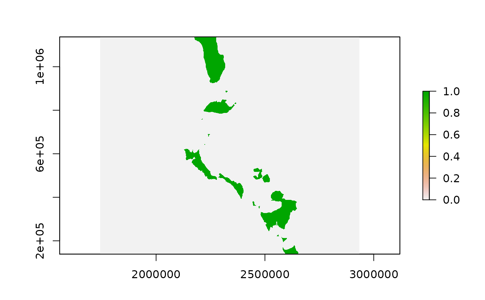
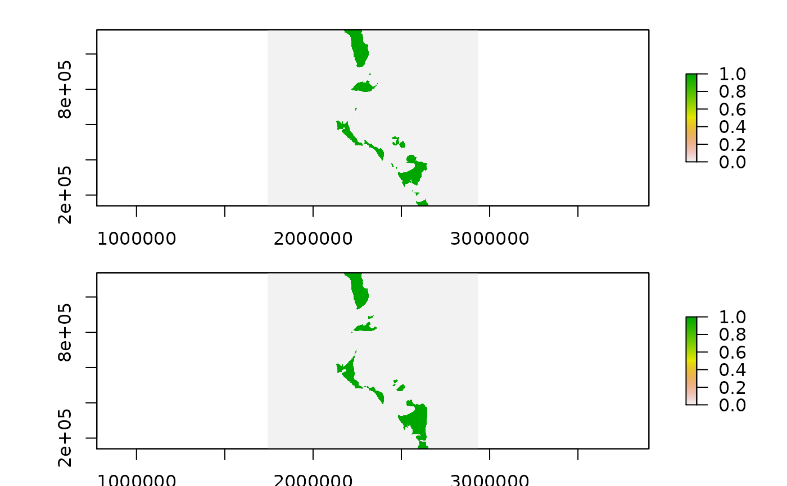

Fast ice data
readfastice( date, product = c("circum_fast_ice", "binary_fast_ice"), xylim = NULL, latest = TRUE, returnfiles = FALSE, ..., inputfiles = NULL )
| date | date or dates to read (can be character, POSIXt, or Date) |
|---|---|
| product | 'circum_fast_ice' or 'binary_fast_ice' |
| xylim | extent in native space of the grid |
| returnfiles | return the file details only |
| ... | reserved for future use, currently ignored |
| time.resolution | fixed, the underlying time step is 15 days |
RasterBrick see Details
High-resolution mapping of circum-Antarctic landfast sea ice distribution, 2000–2018.
Fast ice data on original polar stereographic grid, the product "circum_fast_ice" is 1000m resolution published in Alex Fraser et al. (2020).
Classified surface type:
0: pack ice or ocean
1: continent
2: islands
3: ice shelf
4: fast ice
5: manual fast ice edge
6: auto fast ice edge
0: Southern Ocean, pack ice or icebergs, corresponding to light blue in the PNG files.
1: Antarctic continent (including ice shelves), as defined using the Mosaic of Antarctica product, corresponding to white in the PNG files.
2: Fast ice, as classified from a single 20-day MODIS composite image, corresponding to dark blue in the PNG files
3: Fast ice, as classified using a single 20-day AMSR-E composite image, corresponding to yellow in the PNG files
4: Fast ice, as classified using the previous or next 20-day MODIS composite images, corresponding to red in the PNG files
http://data.aad.gov.au/aadc/metadata/metadata.cfm?entry_id=modis_20day_fast_ice
## read a particular date, it's circumpolar grid with 7 discrete numerc classes fice <- readfastice("2015-10-01")#> Warning: Discarded ellps unknown in CRS definition: +proj=stere +lat_0=-90 +lat_ts=-70 +lon_0=0 +x_0=0 +y_0=0 +a=6378273 +b=6356889.449 +units=m +no_defs +type=crs#> Warning: Discarded datum unknown in CRS definition## hone in on Davis ex <- raster(extent(70.0, 86, -73, -60), crs = "+proj=longlat +datum=WGS84") davis_ice <- crop(fice, projectExtent(ex, projection(fice)))#> Warning: Discarded ellps unknown in CRS definition: +proj=stere +lat_0=-90 +lat_ts=-70 +lon_0=0 +x_0=0 +y_0=0 +a=6378273 +b=6356889.449 +units=m +no_defs +type=crs#> Warning: Discarded datum unknown in CRS definition#> Warning: Discarded ellps unknown in CRS definition: +proj=stere +lat_0=-90 +lat_ts=-70 +lon_0=0 +x_0=0 +y_0=0 +a=6378273 +b=6356889.449 +units=m +no_defs +type=crs#> Warning: Discarded datum unknown in CRS definitionplot(davis_ice >= 4) #, col = c("brown", "white", grey(c(0.2, 0.5, 0.8))), breaks = c(0, 1, 3, 4, 5, 6))## compare 5 years change davis_ice2 <- crop(readfastice("2010-10-01"), projectExtent(ex, projection(fice)))#> Warning: Discarded ellps unknown in CRS definition: +proj=stere +lat_0=-90 +lat_ts=-70 +lon_0=0 +x_0=0 +y_0=0 +a=6378273 +b=6356889.449 +units=m +no_defs +type=crs#> Warning: Discarded datum unknown in CRS definition#> Warning: Discarded ellps unknown in CRS definition: +proj=stere +lat_0=-90 +lat_ts=-70 +lon_0=0 +x_0=0 +y_0=0 +a=6378273 +b=6356889.449 +units=m +no_defs +type=crs#> Warning: Discarded datum unknown in CRS definition#> Warning: Discarded ellps unknown in CRS definition: +proj=stere +lat_0=-90 +lat_ts=-70 +lon_0=0 +x_0=0 +y_0=0 +a=6378273 +b=6356889.449 +units=m +no_defs +type=crs#> Warning: Discarded datum unknown in CRS definition